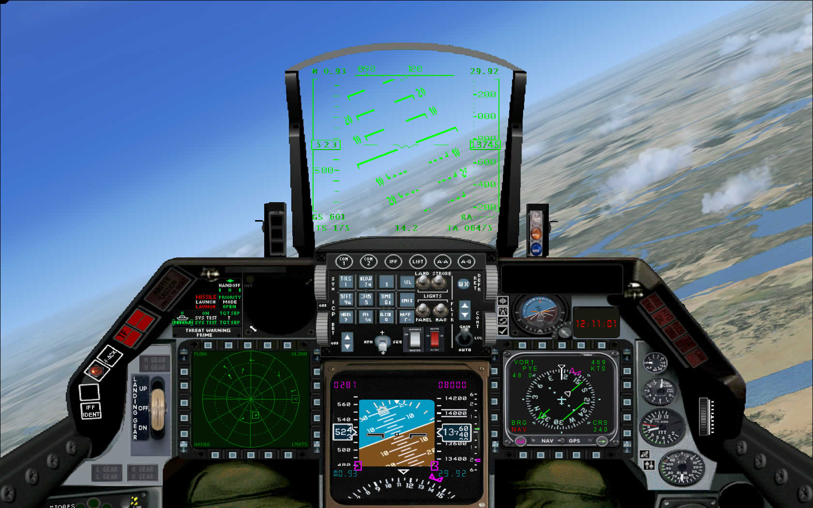

Kirk Olsson’s F-16 Fighting Falcon
by Don filer
Posted on January 1, 2019 at 12:00 PM

Rewards come to he who waits, or so the saying goes. This hobby of ours could easily be renamed “computer mechanic” or “flight diagnostician” for the amount of time and energy you have to put into making things work correctly.
The F-16 is my favorite Flight Simulator aircraft, freeware or otherwise because of the tremendous views you get from both the Virtual and 2D cockpits. This plane has a long history since it first arrived on the Flight Simulator scene several years ago. It is, without a doubt, one of the most popular and frequently downloaded planes of any of the Military jets, and is just a delight to fly. You will find it at FlightSim.com, AVSim.com, Simviation.com or any of your favorite download sites. This is the Gmax version of the single-engine F-16, and it's what I learned to fly jets in.
I was exhilarated the first time I downloaded and fired it up on Runway 29 at Oakland International Airport. My first surprise was the noise of the engine- not a roar, but a whisper. Many jets have come along since then, but I haven’t found one that has a sound as unique as the F-16. The fact the interior and exterior audio effects are different make this jet much more realistic. The Virtual Cockpit is very static by today’s standards but you get the feel of the G forces pushing you back against the hard seat as you roll your head left and right to gaze at the scenery passing by - and it passes by at a pretty good clip. The F-16 can go faster than Mach 2 but I prefer the rate at which scenery moves beneath me at 350 or 400 knots.
The cockpit or 2D panel may be the bane of this plane. It too has a long history and contributes to the mystery of getting the thing installed correctly. Originally designed by Eric Marciano the panel has had to make adjustments as Microsoft has released new versions of Flight Simulator. Bob Chicilo produced the latest and greatest updates for FSX. Without his help I would not have been able to configure the panel properly. So if you are one of the folks who have had headaches getting the panel to work right, do not despair. It is possible and Bob is available by email to give you advice.
The F-16 allowed me to transition seamlessly into the Learjet as well as the Gulf Stream V. I wouldn’t be the simmer I am today without having had the experience and I recommend the F-16 for anyone interested in flying jets.
Interior and Exterior
Kirk Olsson did a magnificent job modeling the F-16 and there are several varieties besides the Clean version shown here; GBU, HARM, JDAM, etc., with different weapon configurations translating into different weights and payloads and therefore flight characteristics. The exterior texture is smooth and simple in the Clean variation. The outside lights cast just enough glow at night to give it a realistic appearance. Some of the other textures available for download include the Tiger and Desert Cammo versions. There are also a variety of tail updates if you desire a variation you’re familiar with, i.e., Shaw Air Force Base or Ramstein, Germany for example.
The interior of the VC panel has no functioning instruments. You can load the HUD into the screen and as long as you don’t change views, you will have some flight feedback to fly by. The 2 dimensional cockpit view has plenty of contrast and the instruments provide loads of flight info. The HUD provides speed, course, altitude, G force, barometric pressure, and angle of attack in addition to engaged flaps and landing gear. No respectable F-16 would be complete without speed brakes which functions as does the hatch opening above the pilot’s head for exit and entry.
The interior lighting is straight forward and well done. At night, you can see the green glow around the pilot’s head from outside the cockpit. Inside, the 2D lights are vibrant, bright, and can be extinguished with the flick of a switch on the front panel. The standard Flight Simulator icons provide access to the GPS, Autopilot, Radio Stack, Map, Kneeboard and Air Traffic Control communication. The HUD can be brightened or darkened and there are a couple of different radar views you can toggle between.
flight Characteristics
You will enjoy this speed demon if you like to fly using the stick and throttle or if you like using the autopilot. I prefer to use an autopilot for dialing in the heading and climb or descent over the stick and I think that’s why I’m not as enthusiastic about low and slow airplanes that require you to fly that way. I know many pilots prefer hanging on to the yoke for the full flight and that’s fine by me. With the F-16 you can have it either way, the autopilot, like the GPS, doesn’t show up unless you click on their respective icons.
The only thing I didn’t like when I first flew the F-16 was I would seldom get lined up properly with the runway for landing. It was this frustration that led me to figure out how to use the ILS system and translated perfectly when I moved into heavier jets. I had no idea what speeds I needed to be at for landing or takeoff before reading Kirk Olsson’s F-16 Fighting Falcon installation guide, a word document included in the base package. After mastering the navigation and speed controls of the Falcon I was ready to give the Boeing 737 a try. Much to my surprise, most of what I had learned in the F-16 translated well in the heavies. You don’t have the same unobstructed view however. You can use the tried and true “W” alpha key to minimize the instruments down to just a few for landing but you lose the most crucial gauge for an ILS approach indicating the proper altitude and bearing for the centerline on the runway.
Installation
You will need to download one of the original complete F-16 packages, usually called usviper.zip, which is a 16MB file. After that, you need to find Bob Chicilo's f16up2xa.zip, a 135KB file which updates the model for use in FSX. There are several other F-16 variations you'll find as well, including numerous repaints and modified versions of the original, but my advice is to concentrate on the main two files to get it working with FSX properly. Until someone puts together an autoloader you'll have to install everything manually. Be extra careful about where you copy the files. I suspect the directions are not perfect so even if you do everything right, it may not be. There are some extras like afterburner, and wing vapor for an even more realistic look. I’ve always thought the after burner section on this bird is a little unrealistic but I’m not complaining. !
Conclusion
What can I say? I love this plane! Just as I would fly a low and slow Cessna to check out scenery, I use the F-16 as my regular ‘get-around’ jet. The F-16 allowed me to transition seamlessly into the Learjet as well as the Gulf Stream V. I wouldn’t be the simmer I am today without having had the experience and I recommend the F-16 for anyone interested in flying jets.